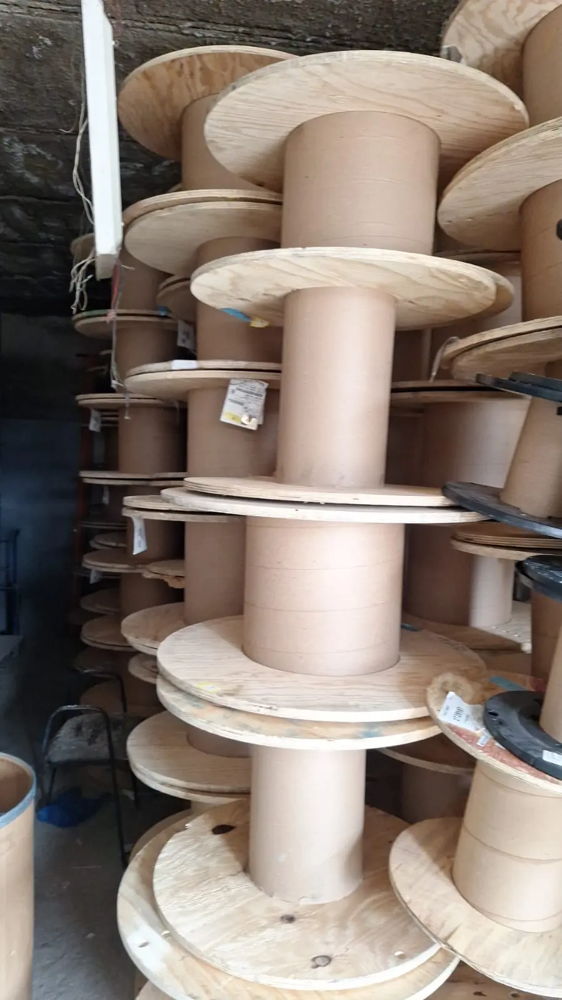
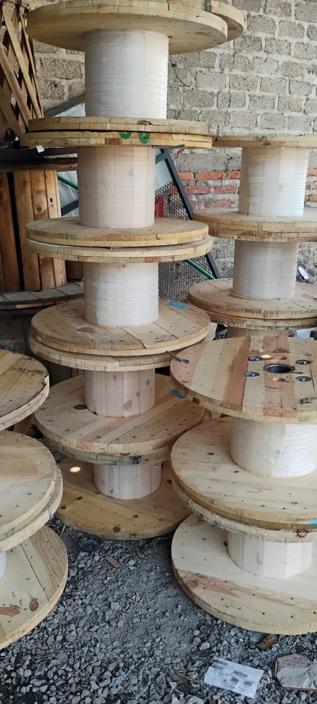
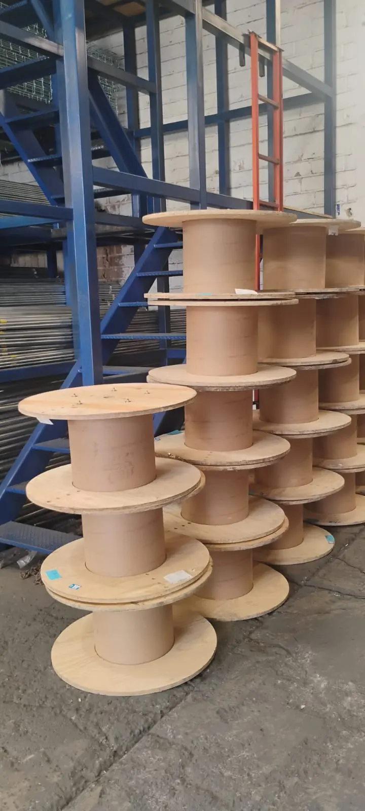
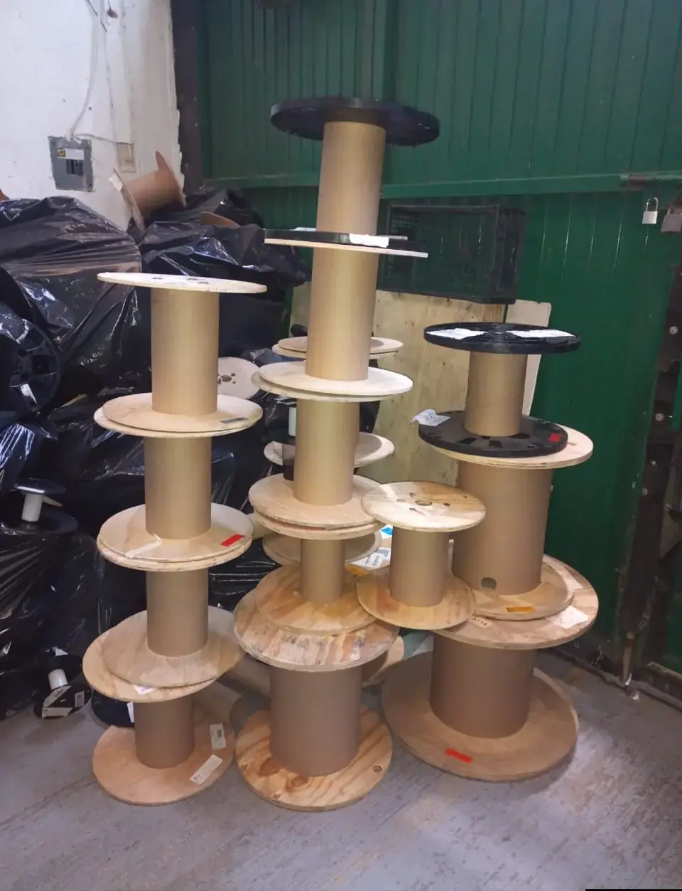
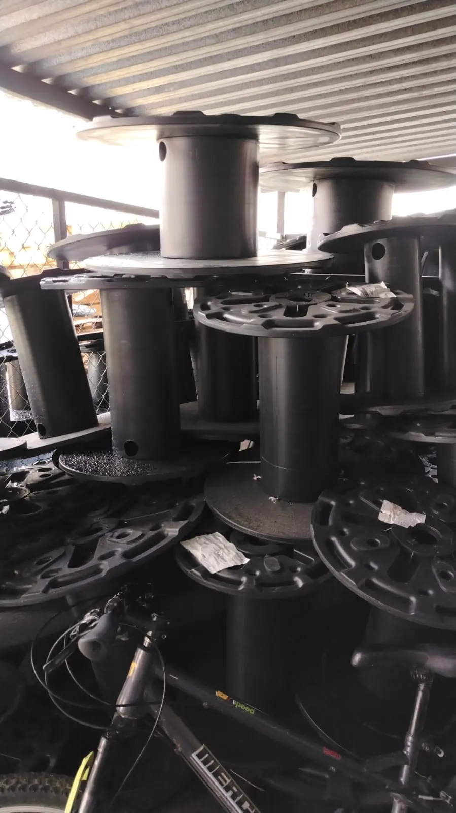
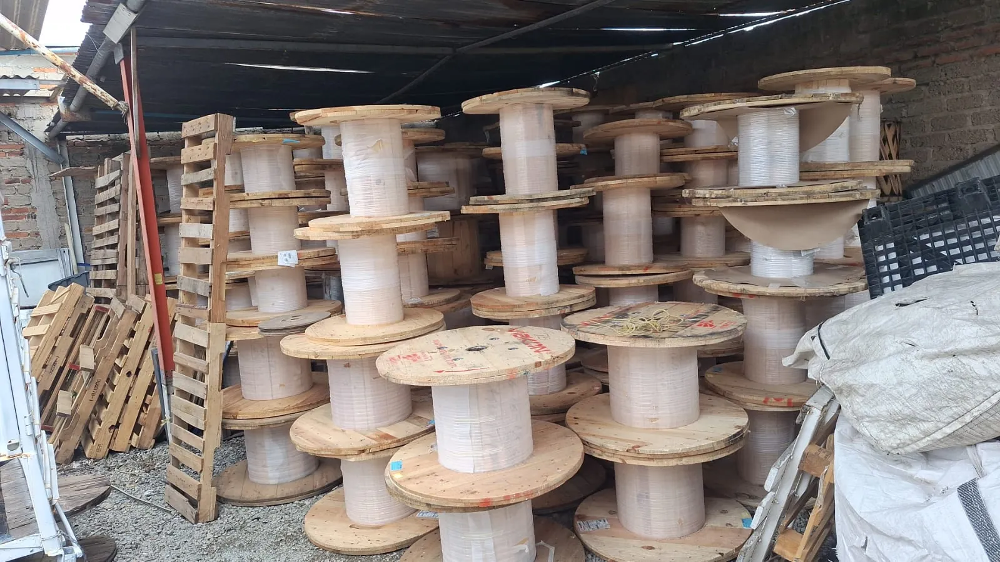

TriplayTriplay · núcleo de cartón
El clásico: tapas de triplay y núcleo de cartón kraft. Ligeros, fáciles de trabajar, lijar, pintar o barnizar.
Cotizar este tipoCarretesGDL
Inicializando inventario
Inventario disponible · Guadalajara, Jalisco
Ideales para tu mesa de centro
Carretes usados, de un solo uso y en buen estado. Triplay y madera maciza con fotos reales de nuestro inventario, listos para darles una segunda vida.
01Propuesta de valor
Cada carrete que ofrecemos ya cumplió su primer trabajo. Hoy llega a ti usado, en buen estado y de un solo uso, listo para convertirse en tu mesa, tu barra, tu jardín o tu próximo proyecto. Directo desde Guadalajara.
Carretes que conservan su estructura, sus tapas y su núcleo en buen estado, listos para trabajar.
Solo cumplieron un ciclo transportando cable. No son piezas con mil vidas a cuestas.
Inventario en Guadalajara, Jalisco. Escríbenos y coordinamos tu compra de forma directa.
Dar una segunda vida a un carrete evita que madera en buen estado termine como residuo.
02Anatomía
Un carrete es más que dos discos y un tubo. Estas son las partes que lo hacen tan versátil para muebles, decoración y proyectos.
Los dos discos laterales. Los hay de triplay, de madera maciza armada con tablones y de plástico. Son la superficie perfecta para mesas, barras y tableros.
El cilindro central que une las tapas. En nuestro inventario hay de cartón kraft y de otros materiales, según el modelo. Le da altura y personalidad industrial a cada pieza.
El orificio por donde pasaba el eje. En proyectos de mobiliario se aprovecha para sombrillas, luminarias o cableado.
Tornillos, arandelas, etiquetas y numeración del fabricante. Es parte del carácter de cada carrete: no hay dos iguales.
03Inventario
Estas son fotos de nuestro inventario actual. Elige el tipo que te interesa y cotiza al instante por WhatsApp.

TriplayEl clásico: tapas de triplay y núcleo de cartón kraft. Ligeros, fáciles de trabajar, lijar, pintar o barnizar.
Cotizar este tipo
Madera macizaTapas armadas con tablones de madera y núcleo de gran diámetro. Aspecto rústico industrial, ideales para mesas.
Cotizar este tipo
TriplayPiezas medianas y grandes con tapas lisas de triplay. Pregunta por el diámetro y el alto que necesitas.
Cotizar este tipo
MixtoNúcleo de cartón con tapas plásticas negras, o combinaciones con triplay. Un look oscuro y moderno.
Cotizar este tipo
PlásticoCarretes completos de plástico, ligeros y resistentes a la intemperie. Consulta disponibilidad actual.
Cotizar este tipo
VolumenTenemos bastantes carretes. Si necesitas varias piezas para un restaurante, evento o taller, cotizamos por lote.
Cotizar un loteNo hay modelos en esta categoría por ahora. Escríbenos y te decimos qué hay disponible.
04Fotos reales
05Ideas y usos
El carrete de madera es uno de los materiales favoritos del diseño industrial. Esto es lo que puedes construir con uno.
La tapa ya es una mesa: solo lija, barniza y listo. Una pieza con carácter que ningún catálogo tiene.
Barras altas, mesas de terraza y mobiliario con estética industrial.
Exhibidores y decoración que atrae miradas desde la calle.
Mesas exteriores, bases para macetas y rincones con encanto.
Mesas de trabajo resistentes y soportes para tu operación diaria.
Display llamativo, económico y fácil de transportar.
Triplay y tablones de madera para tus propios diseños, restauración y proyectos DIY.
06Proceso
Sin intermediarios ni complicaciones. De tu mensaje a tus carretes en cuatro pasos.
Mándanos un WhatsApp o llena el formulario. Te respondemos directo, sin bots.
Dinos el tipo (triplay, madera maciza o plástico), el tamaño aproximado y cuántos necesitas.
Te compartimos fotos reales, disponibilidad y precio para que decidas con confianza.
Acordamos contigo cómo y cuándo recibirlos en Guadalajara. ¡A construir!
07Muy pronto
Estamos ampliando el catálogo. Pronto podrás comprar y vender plástico, PP, PVC y polietileno directamente con nosotros.
¿Tienes material para vender? Cuéntanos qué tienes →
Compra y venta
Polipropileno · compra y venta
Compra y venta
Compra y venta
08Preguntas frecuentes
¿No encuentras lo que buscas? Escríbenos y te respondemos al momento.
Preguntar por WhatsAppCarretes de triplay con núcleo de cartón y de madera maciza armados con tablones. También manejamos carretes de plástico. Revisa la galería y escríbenos para conocer la disponibilidad actual.
Sí. Son carretes usados, en buen estado y de un solo uso. Puedes ver fotos reales de nuestro inventario en la galería y pedir más fotos por WhatsApp antes de decidir.
Estamos en Guadalajara, Jalisco (GDL). Escríbenos por WhatsApp y coordinamos tu compra.
Depende del tipo, el tamaño y la cantidad. Cotiza por WhatsApp y te respondemos con precio y disponibilidad.
Manejamos volumen: tenemos bastantes carretes. Dinos cuántos necesitas y cotizamos por pieza o por lote.
Mesas de centro y de comedor, barras, decoración industrial para bares, restaurantes y locales, mobiliario de jardín, mesas de trabajo, stands para eventos y materia prima de carpintería. Mira la sección de ideas y usos.
Sí. En México se les llama carretes, bobinas o tambores a los enrolladores de cable hechos de madera, triplay o plástico. Es el mismo tipo de pieza.
Estamos preparando una sección de compra y venta de plástico, PP, PVC y polietileno. Escríbenos y te avisamos cuando esté lista.
09Contacto
Cuéntanos qué necesitas. Al enviar, se abre WhatsApp con tu mensaje listo para mandar.